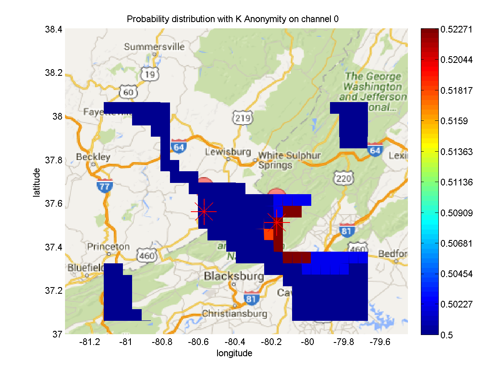
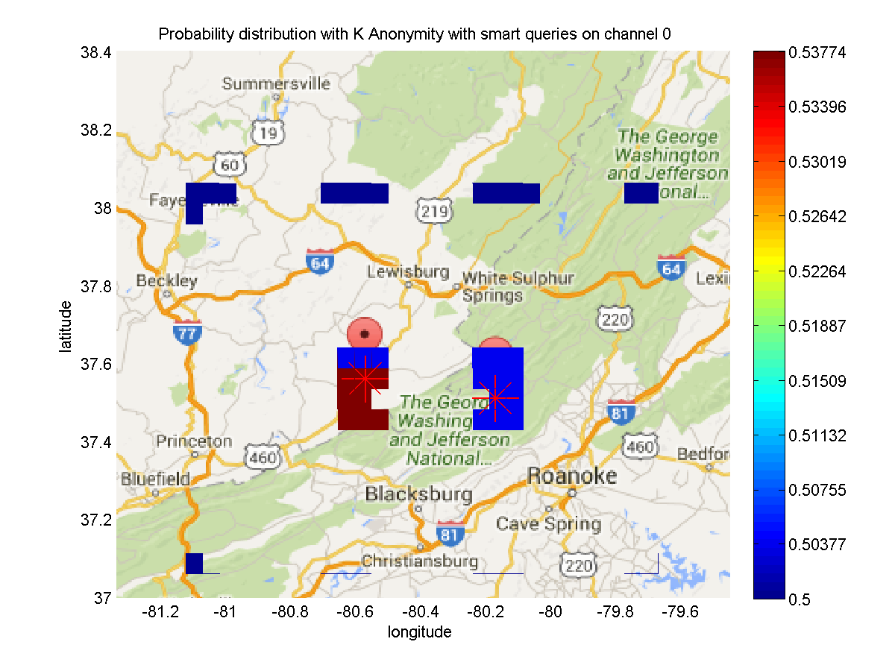
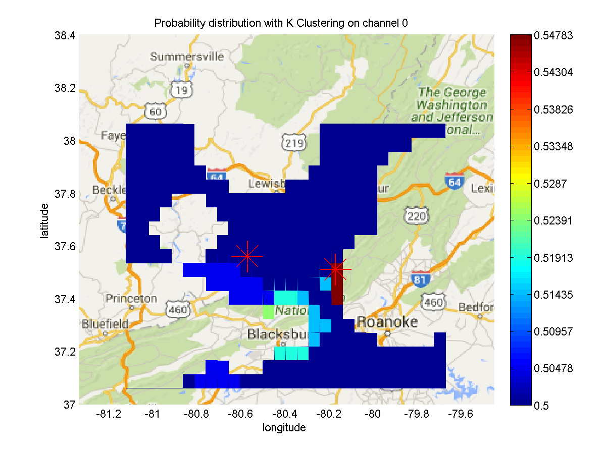

In this test scenario we'd like to show what happens when you select both query options, the random query and the smart query. This is important because we generate two new kinds of graph to compare these two different query methods. All the features and graphs from the first example remain the same. The smart query algorithm is quite demanding in terms of computation so in our configuration we try to construct a simple case. We will simulate with two Primary User operating in one channel. We choose a relatively small analysis area with the greatest grid size to reduce computation. Within a small region a small number of queries would be sufficient. We use K-Anonymity and K-Clustering as countermeasures in this example.
The following screenshots show the configuration process for above requirement.
First select number of channels as 1 channel and specify grid size as 5 km from the dropdown button.
Then specify two Primary Users on a rectangle area of interest.
Choose No countermeasure, K-Anonymity and K-Clustering. For anonymity 1 means each group will have one Primary User inside, which is in fact the same as no countermeasure. For clustering 1 means two Primary Users in the map will be clustered as one.
We don't include heat map or trade-off plots this time. They are generally the same with previous example.
Select both query options: Random queries and Smart queries. This time we query for 10 times, which is enough for a map at this scale.
In the result email, you will receive following files and plots:
The log file is a text file that is included as one of attachments that summarizes all parameters you just chose to help you to associate your simulation results with your simulation requests. Specifically the file includes information about number of channels, grid size, coordinates of the analysis region, locations of primary users, countermeasures and their parameter values, query options and number of queries.
This plot compares inaccuracy between different countermeasures with random query method.
In this case the line for K anonymity is pretty much the same with no countermeasure, whereas the line for K cluster is generally higher because it groups two Primary Users as one and thus extends its protection range.
This plot compares inaccuracy between different countermeasures with smart query method.
In this case the line for K anonymity is the same as no countermeasure. The line for K cluster is higher after certain numbers of queries.
Here we compare the probability inferred by the attacker based on two different query algorithms. We project this data right on top of the analysis area. The color near red means the attacker thinks there is a greater probability that the associated area has a primary user. The blue end means less probability. The transparent region means the attacker is certain that primary user does not reside in those areas. Probabilities of those regions are 0 so they are not plotted. The red marks on top of the map indicate the actual locations of primary users.
The probability map on the left is the result of using K-Anonymity and random queries. On the right side is its counterpart using smart queries. As you can see within certain number of queries the smart query algorithm would be a method of choice for attackers.
 Below is the comparison between random query and smart query using K-Clustering as countermeasure. In this case because of the countermeasure they have pretty much the same results but you can still see that smart query has a certain pattern of querying.
This figure shows that with no countermeasure, smart query method performs better than random query method in terms of inferring actual locations of Primary Users.
This figure compares the inaccuracy value after all the queries are done. It groups a pair of inaccuracy value by countermeasures and compare the inaccuracy between random queries and smart queries for a particular countermeasure.
As you can see the inaccuracy with smart queries are generally more efficient than its random counterpart. The smart querying algorithm is able to bring down the inaccuracy very quickly with less queries.